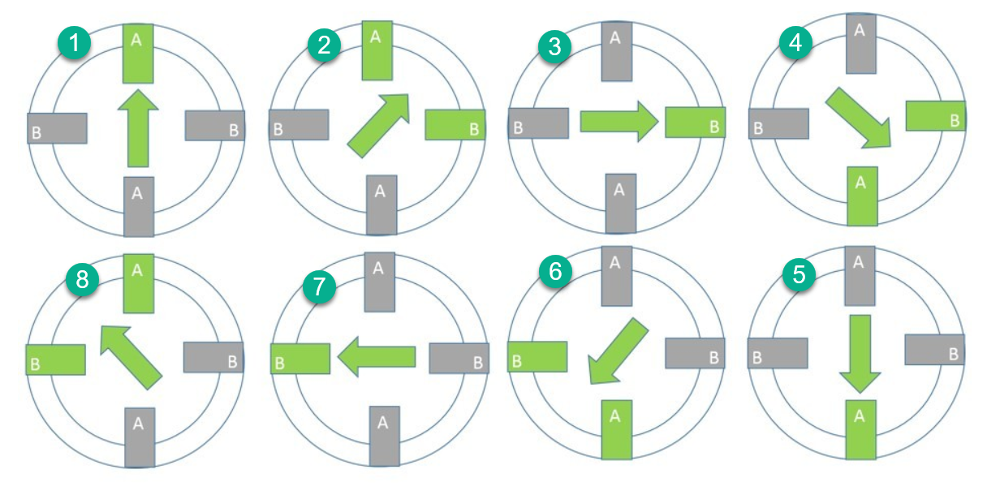

Breid je stappenmotor uit met een schuifschakelaar die kiest tussen full step en half step. In half step zet de motor twee keer zoveel stappen per omwenteling, en dus draait hij bij dezelfde wachttijd half zo snel.
Aan je schakeling verandert er bijna niets, want je hebt dezelfde vier leds en dezelfde L293D als in Stappenmotor laten draaien in full step. Er komt alleen een schuifschakelaar bij. Het nieuwe zit helemaal in de stappentabel.
Bij full step bekrachtig je telkens één spoel en trek je de rotor met een hele stap verder. Bekrachtig je er twee tegelijk, dan gaat de rotor er precies tussenin staan. Wissel je die twee soorten standen af, dan krijg je acht standen in plaats van vier.

De volledige tabel met de acht stappen staat op De stappenmotor. Kijk vooral naar stap 1, 3, 5 en 7, want dat zijn de vier stappen van full step. Half step is dus full step met er telkens een stand tussen.
Aan je leds zie je het verschil goed. Bij half step brandt er afwisselend één led en dan twee leds samen.
Hang een schuifschakelaar aan een vrije digitale pin, bijvoorbeeld pin 6. Denk aan de pull-up of pull-down weerstand. Een ingang die nergens aan hangt zweeft, en dan leest je programma willekeurige waarden.
Contactdender speelt hier geen rol, want je reageert niet op het moment van omschakelen maar op de stand. Lees de schakelaar elke ronde uit en gebruik die waarde. Bij de drukknop in de volgende oefening ligt dat anders.
Je hebt nu twee stappentabellen die niet even lang zijn: vier rijen tegenover acht. Dat betekent dat je bij het wisselen ook moet oppassen dat je stapteller niet buiten zijn tabel wijst.
Je kan met twee aparte arrays werken en met een if kiezen uit welke je leest. Dat werkt, maar dan staat die if overal.
Het kan eenvoudiger. Gebruik alleen de half-steptabel van acht rijen. Full step is diezelfde tabel, maar dan met stappen van twee in plaats van één. Zo heb je één tabel, en verandert de schakelaar enkel de grootte van je stap.
Sla je oefening op.
Overloop volgende checklist om je oefening zelf te evalueren:
Er is maar één tabel nodig, die van half step met acht rijen. De schakelaar bepaalt of je er met stappen van 1 doorheen gaat (half step) of met stappen van 2 (full step, want dan sla je de tussenstanden over).
Dat is meteen de reden waarom omschakelen tijdens het draaien geen probleem geeft. Je blijft in dezelfde tabel en op dezelfde positie, en zet alleen grotere of kleinere sprongen. De % zorgt dat je altijd binnen de acht rijen blijft, ook als je er twee tegelijk opschuift.
const int motorPinnen[] = {2, 3, 4, 5}; // 1A, 2A, 3A, 4A van de L293D
const int modusPin = 6; // schuifschakelaar: full of half step
const int potPin = A0;
const int aantalStappen = 8;
// De half-steptabel. Stap 0, 2, 4 en 6 zijn samen de full-steptabel.
const int halveStap[aantalStappen][4] = {
{1, 0, 0, 0}, // alleen spoel A
{1, 0, 1, 0}, // A en B samen
{0, 0, 1, 0}, // alleen spoel B
{0, 1, 1, 0}, // A en B samen
{0, 1, 0, 0}, // alleen spoel A
{0, 1, 0, 1}, // A en B samen
{0, 0, 0, 1}, // alleen spoel B
{1, 0, 0, 1} // A en B samen
};
int huidigeStap = 0;
void zetStap(int stap)
{
for (int pin = 0; pin < 4; pin++)
{
digitalWrite(motorPinnen[pin], halveStap[stap][pin]);
}
}
void setup()
{
for (int pin = 0; pin < 4; pin++)
{
pinMode(motorPinnen[pin], OUTPUT);
}
pinMode(modusPin, INPUT);
}
void loop()
{
int potWaarde = analogRead(potPin);
int wachttijd = map(potWaarde, 0, 1023, 100, 2);
// schakelaar hoog is half step, dus stappen van 1
// schakelaar laag is full step, dus de tussenstanden overslaan
int stapGrootte = 1;
if (digitalRead(modusPin) == LOW)
{
stapGrootte = 2;
}
zetStap(huidigeStap);
delay(wachttijd);
huidigeStap = (huidigeStap + stapGrootte) % aantalStappen;
}